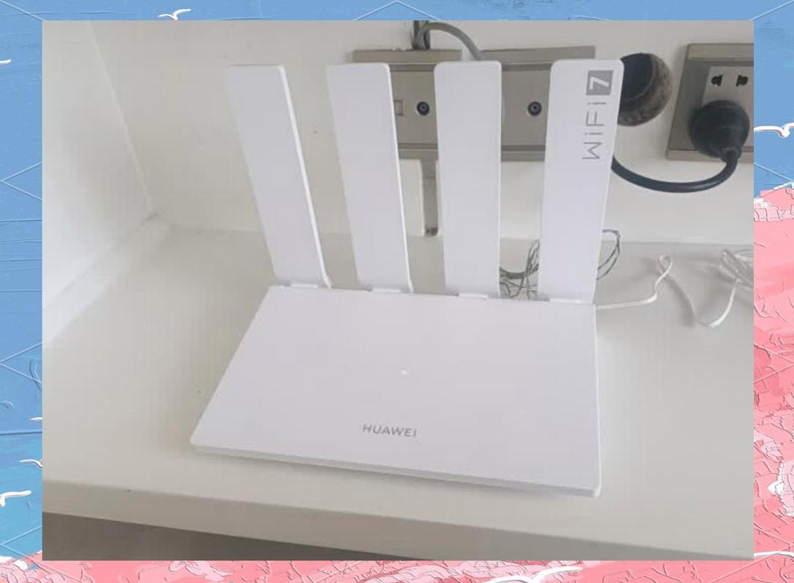

华为路由 BE3 Pro

华为面向主流市场的 Wi-Fi 7 路由器，以亲民价格提供 2.5G 网口与鸿蒙 Mesh 组网，适合华为手机与全屋智能用户低成本升级新协议的实用之选，设置简单、覆盖可靠，日常使用省心。
客观评测
BE3 Pro 搭载自研多核平台，双频 BE3600 无线规格，支持 Wi-Fi 7 的 MLO 等特性，提供 1 个 2.5G 网口与 3 个千兆网口。实测近距离速率满足千兆宽带绰绰有余，穿墙后衰减控制中规中矩，多设备日常负载下稳定。凌霄 Mesh 与华为系设备的配网体验流畅，智慧生活 App 管理直观。总体是一款把 Wi-Fi 7 与 2.5G 网口下放到主流价位的实用型产品。
主观点评
对华为全家桶用户来说，它几乎是无脑之选：手机靠近就能配网，智能家居设备一碰即连，父母家用也省去了大量客服时间。性能上它不追求跑分极限，而是把日常的稳和省心做到位。预算四百元想换 Wi-Fi 7，或者想给家里组一套不折腾的 Mesh，它都很称职。
优点与不足
- Wi-Fi 7 亲民价，2.5G 网口同价位少见
- 鸿蒙设备配网省心，全屋智能联动顺畅
- 外观简洁，散热与噪音控制好
- 无线规格定位入门，5GHz 速率不算激进
- 高级功能对非华为生态用户吸引力一般
- 2.5G 网口仅一个，扩展性有限
参数规格
| 无线规格 | Wi-Fi 7（802.11be）双频 BE3600，5GHz 约 2882Mbps + 2.4GHz 约 688Mbps |
|---|---|
| CPU | 自研多核处理器 |
| 内存 | 约 512MB |
| 天线 | 外置高增益天线 4 根 |
| 端口 | 2.5G 网口 ×1、千兆网口 ×3（含 WAN） |
| 特性 | 支持 MLO 双链路聚合、M-RU 调度（视固件版本） |
| Mesh | 支持华为凌霄 Mesh，可与子母路由、其他华为路由混组 |
| 生态 | 华为智慧生活 App，HarmonyOS 设备免密配网 |
| 游戏 | 内置游戏加速与手游专属通道 |
| 功耗 | 约 10-16W |